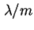
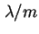
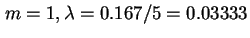
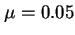

เรื่องที่สำคัญในการตัดสินใจเมื่อมีจำนวนเครื่องบริการที่เหมือนกันมากกว่าหนึ่งเครื่อง คือการจัดการระบบคิวว่าจะใช้คิวแยกจากกันในแต่ละเครื่องบริการ หรือใช้คิวรวมกันทั้งหมด  เครื่องบริการ
เครื่องบริการ
ถ้าการเข้าใช้บริการ และการบริการเป็นแบบพัวซอง ในกรณีแรกสามารถจำลองโดยใช้  คิวจำนวน
คิวจำนวน  แต่ละคิวมีอัตราการเข้าใช้งานเท่ากับ 
ในกรณีที่สองเราจำลองคิวโดยใช้
แต่ละคิวมีอัตราการเข้าใช้งานเท่ากับ 
ในกรณีที่สองเราจำลองคิวโดยใช้  คิวด้วย อัตราการเข้าใช้งาน
คิวด้วย อัตราการเข้าใช้งาน 
จากตัวอย่างที่แล้ว ถ้าแยกคอมพิวเตอร์ออกเป็นห้องปฏิบัติการคอมพิวเตอร์ กระจายออกไป 5 แห่งในมหาวิทยาลัย ดังนั้นจึงต้องจำลองโดย
 ดังแสดงในรูป 5.3
ดังแสดงในรูป 5.3
ในกรณีนี้อัตราการเข้าใช้งานระบบลดลง 5 เท่าจากอัตราการเข้าใช้เดิม 
ใช้ค่า , และ  เราจะได้
| (5.35) |
เวลาเฉลี่ยที่อยู่ในห้องปฏิบัติการคอมพิวเตอร์เท่ากับ
| (5.36) |
ค่าความแปรปรวนของเวลาที่อยู่ในห้องปฏิบัติการคอมพิวเตอร์คือ
| (5.37) |
เปรียบเทียบกับเวลาเฉลี่ย 24 นาที และ ค่าความแปรปรวน 479 จะเห็นได้ว่าการใช้คิวเดี่ยวจะมีประสิทธิภาพดีกว่าคิวที่แยกจากกัน